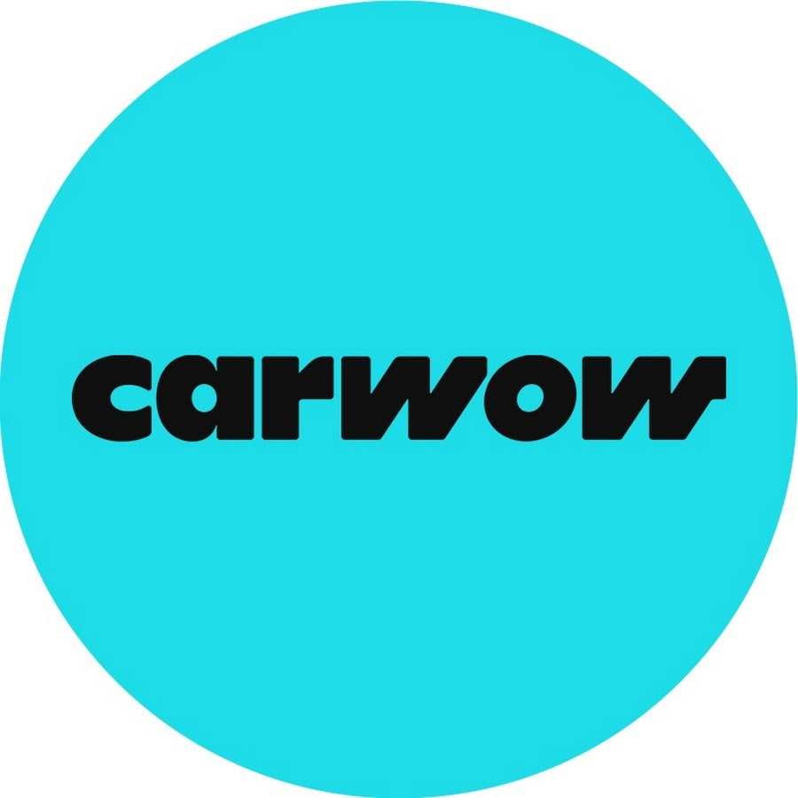

About Me
I'm passionate about getting an understanding of how data driven decisions are made and I enjoy exploring areas like financial trends, technology and the automotive market.
BloombergBloomberg is my favorite website to go through when receiving the latest updates on financial data and trends. They also have a technology counterpart, bloomberg.com/technology , which I enjoy visiting for tech industry news.
CarWow is my favorite youtube channel ever that makes videos involving vehicle comparisons and top speed tests that I find so fun and interesting. The host Mat Watson, also takes time exploring and explaining the automotive market and its trends in pricing.
